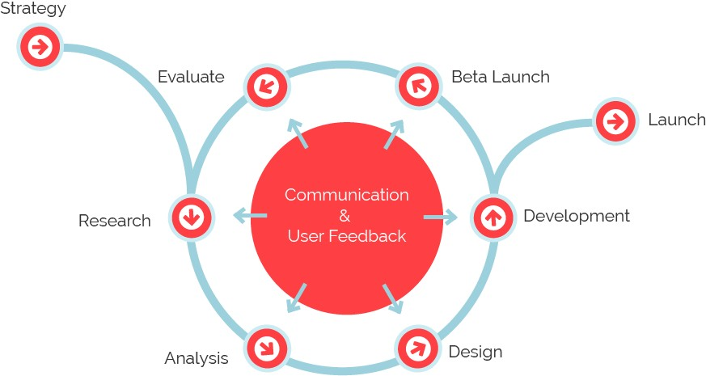

About Me
- 01 1996 - First computer
Just for fun. He was 5, living in Mongaguá, Brazil. His dad upgraded Windows 3.11 to 95 for run Wolf 3D, Cosmo Adventure and Command & Conquer.
- 02 Studied in public school
until becoming adult, receiving medal in the end of year as merit of the best student.
- 03 Passion for computers
At 13, he tooks courses in computer assembly and maintenance.
- 04 Interest in web started
as a teenager, the main hobby was joining the city's lan house to have fun with games and get to know new music through MySpace, where you could customize the page profile. Then came the interest in the web.
- 05 Web Design
At 17, he tooks a web design course. But he learned more by self-taught.
Action Script, HTML, CSS e Fireworks. - 06 First Geek Job
at 18, after undergoing a computer resuscitation test, he gotta a job in the best lan house in the city, where he attended during his teenage years.
- 07 College
He started studying systems analysis and development with money from lan house.
- 08 Nothing to lose
He dropped out of college to buy the lan house he worked for, and then he was forced to work full time to pay for the financing.

- 09 Moved to São Paulo
From Mongaguá to São Paulo, the dream of my infance was happened.
- 10 Left lan house
and has begun to dedicate himself from the area of information technology.
- 11 Job as a support analyst
it was at the moment that he was studying Microsoft's products and computer networks (but his passion, as well as his work environment, have always been Linux).
- 12 Has been certified in ITIL 2011 F.
due to customer requirement of the company that he worked. It added him a lot as a professional.
- 13 Has been certified in ISO/IEC 20k F.
leveraging the engagement of ITSM best practices from previous certification to the standards.
- 14 He went back to the college
now studying computer science,
he liked to go to the libraries more often than classes.- 15 Incident, Problem, and Change Mngt
because of the certifications, he began working with incident and IT change management in a mission-critical environment.
- 16 Dropped out college by choice
because it's politics, economics, and misaligned incentives. The people are trapped in a system that produces an insecure environment.
- 17 Became Linux Professional
such as workload automation analyst. He and his teammates performed and maintained automated functional routines on all internally process to certify them for production implementation.
- 18 Linux Analyst
running and monitoring web scrappers in AWS instances, doing scripts shell maintenance, and manipulating data across regular expressions.
- 19 Started to love programming
and quit his job. He proposed to leave the operational area/infra for development to be a part of innovation teams.
- 20 No enough dev XP yet
and because of that, returned to work as a support analyst while joined in bootcamp.
- 21 Became Free Lancer
making small jobs around the world remotly to get experience.
- 22 Became Full Stack Developer
after a lot of dedication with bootcamp, books, videos and coding. But he still have a lot to learn and always will.
- 23 So here
scrolling down, you can see his main technical skills used daily for work, delivering and maintain awesome products.
- ... Scroll down
- 07 College
Technical Skills
I specialize in front end development and design, with knowledge in system administration and back end development.

HTML

CSS

Bootstrap

Ajax
Regex
HTTP

REST

Git

JavaScript

Node.js
Sass

Shell Script

Perl
Python

Django
SQL
Web Application Firewall

AWS

Command Line

Linux
The Design Process
How does your site’s design impact customer experience?
Do you know of any other ways to improve visitors’ experience on your site with web design?
Design isn't not all about visuals.
You need to know that. You need to improve that. You need to contact me.
Even if it need just optimize or develop from scratch.
I love bringing my designs to life into code,
also acting like a mad scientist with security commitments
and responsibilities into my development cycle.
What am I doing when I’m not helping to create awesome products?
I love to reading, learning new technologies, methods and improve my tech skills.
Also, I watch movies and walk around my city.
Random fact: I'm passionate about my girl. Minimalist. Vegetarian. Virgo.
That's enough about me, let's talk about you!
If you like what you see and want to chat please contact me!
Private Message Me
Kleber Schneider is based in São Paulo, Brazil